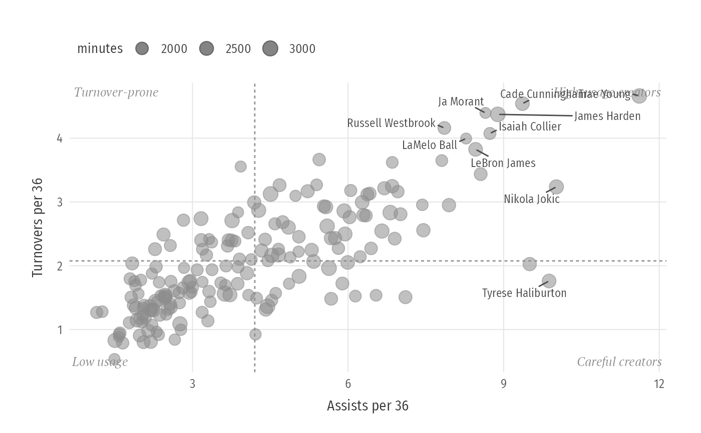

Quadrant scatter: two stats, an average cross and stories in the corners
Source:R/players.R
plot_quadrant.RdPoints (optionally sized and coloured by two more variables), dashed lines at the average of each axis, corner captions, and labels for highlighted and most extreme cases (repelled, so they never overlap).
Usage
plot_quadrant(
data,
x,
y,
label = NULL,
size = NULL,
colour = NULL,
highlight = NULL,
n_label = 10,
corners = NULL,
centre = c("mean", "median"),
xlab = x,
ylab = y,
size_lab = size,
colour_lab = colour,
title = NULL,
subtitle = NULL,
caption = NULL
)Arguments
- data
A data frame.
- x, y
Column names.
- label
Column with names.
- size, colour
Optional columns mapped to point size and colour.
- highlight
Names to colour and label.
- n_label
Also label the
n_labelpoints farthest from the centre.- corners
Optional four captions: top-left, top-right, bottom-left, bottom-right.
- centre
"mean"or"median"reference lines.- xlab, ylab, title, subtitle, caption
Labels.
- size_lab, colour_lab
Legend titles.
Examples
p <- subset(player_seasons, league == "NBA" & minutes >= 1500)
p$ast36 <- 36 * p$ast / p$minutes
p$tov36 <- 36 * p$tov / p$minutes
plot_quadrant(p, "ast36", "tov36", label = "player", size = "minutes",
corners = c("Turnover-prone", "High-usage creators",
"Low usage", "Careful creators"),
xlab = "Assists per 36", ylab = "Turnovers per 36")
